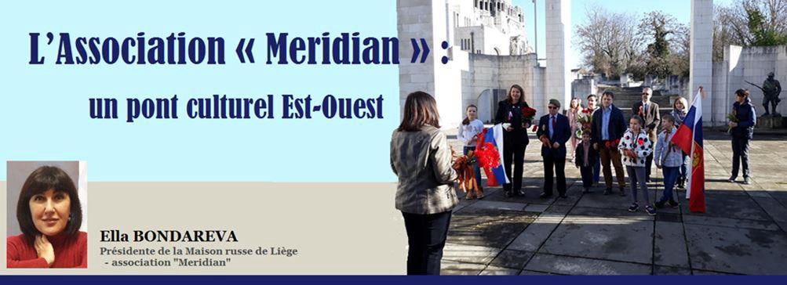
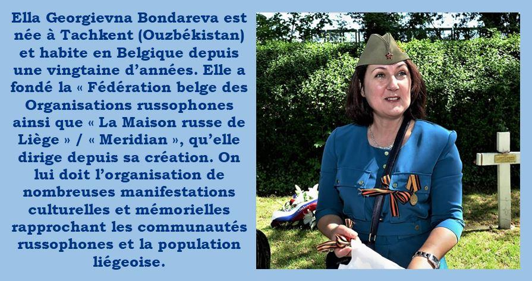
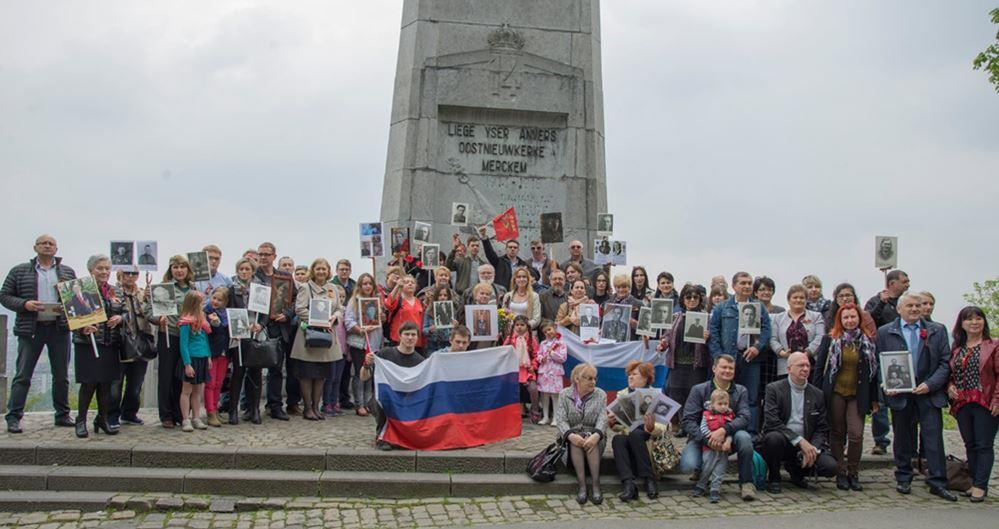
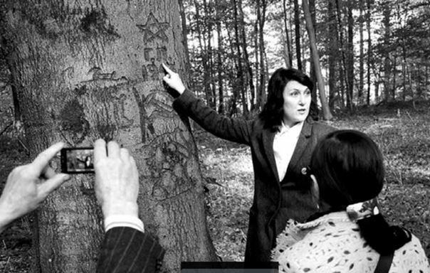
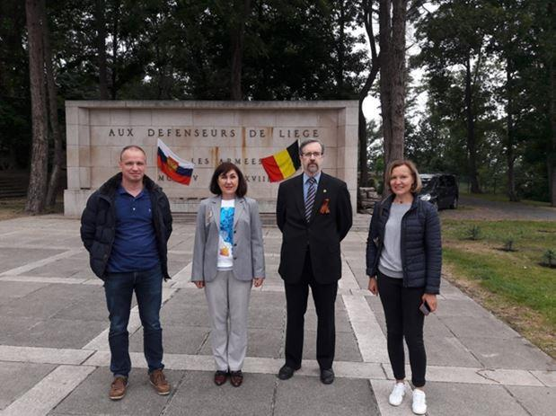
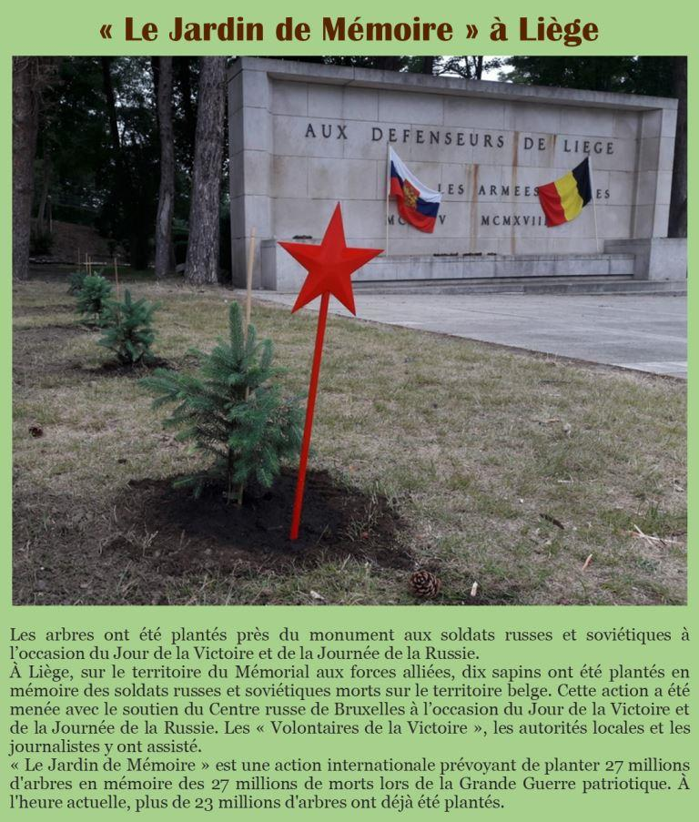
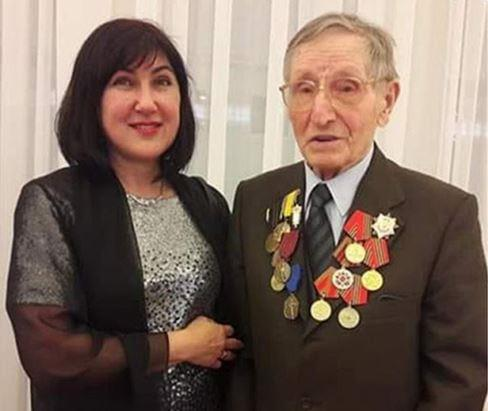
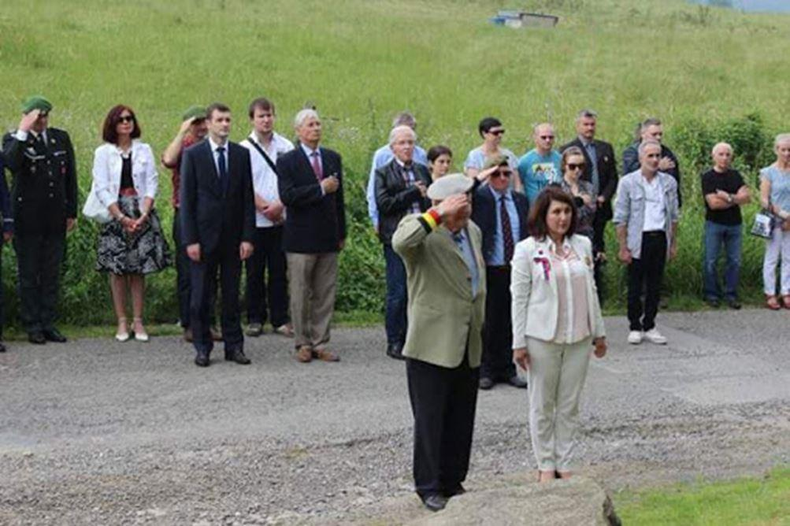

L’Association « Meridian » : un pont culturel Est-Ouest
par Ella BONDAREVA

L'Association sans but lucratif « Meridian » a été fondée en Belgique en février 2006. Son but : résoudre les problèmes sociaux, juridiques et administratifs des expatriés des pays de l'ex-Union soviétique qui ont choisi la Belgique comme terre d’accueil. L'Association organise également des événements culturels, des concerts, des spectacles, des fêtes populaires, des expositions d'artisanat et des ateliers créatifs.
« Meridian » compte environ deux cent membres permanents. On peut estimer le nombre de migrants russophones vivant en Belgique à quatre-vingt mille. L'Association regroupe des membres de la communauté habitant la région wallonne, soit plus de dix mille personnes provenant de toutes les républiques de l’ex-URSS.
Une place particulière dans les activités de notre organisation est réservée à la préservation du souvenir du rôle des soldats soviétiques dans la libération de l'Europe. Nous sommes engagés dans cette activité depuis 2008.
À l'heure actuelle, douze articles biographiques sur les soldats soviétiques membres de la Résistance belge ont été publiés. Les représentants de l'association ont été invités à participer aux cérémonies consacrées à la célébration du Jour de la Victoire en 2015, dans les villes de Volgograd et de Saint-Pétersbourg.
Une attention particulière est accordée à l’identification des soldats soviétiques inconnus tombés en Belgique. Ainsi, en 2014, les noms des prisonniers de guerre soviétiques membres de la Résistance belge, fusillés à Liège en 1944, ont été restitués. Des plaques nominatives ont été installées sur les croix de l’Enclos des Fusillés, cimetière situé dans le parc de la Citadelle, qui compte 415 tombes de victimes de l’occupant nazi.
En 2016, avec le soutien de l'Ambassade de la Fédération de Russie en Belgique et du Conseil de l’Oblast de Leningrad, le conseil Oblastal, l'Association « Meridian » a restauré deux cent plaques commémoratives de soldats russes tombés lors de la Grande Guerre au cimetière de Robermont (Liège). En 2018, à l'occasion du centième anniversaire de la fondation de l'Armée rouge, l'Association Meridian, avec le soutien du gouvernement de la Oblast wallonne et de l'Ambassade de la Fédération de Russie en Belgique, a fait restaurer le monument « Aux soldats russes et soviétiques tombés pendant la Première et la Deuxième Guerres mondiales », situé au Mémorial interallié de Cointe (Liège).
Chaque année, l'Association « Meridian » organise de nombreux événements commémoratifs dont le défilé du Régiment des Immortels, qui se déroule à Liège à l’Enclos des Fusillés de la Citadelle, où sont enterrés les soldats soviétiques membres de la Résistance belge. Lors de cette cérémonie, sur le mur de la fortification transformée en prison de la Gestapo, nous installons des photos des soldats soviétiques qui y ont été torturés et abattus, à la suite de quoi les participants se recueillent à leur mémoire.
Des représentants de l'Ambassade de la Fédération de Russie en Belgique, du Rossotroudnitchestvo, de l'administration de la ville de Liège, des représentants du clergé, des organisations belges et russophones, ainsi que le Conseil de Coordination des Compatriotes russes de Belgique participent à cette action.
Résumé des actions menées en 2020 :
Dépôt de gerbes et de fleurs, plantation du Jardin de la Mémoire au Mémorial interallié de Cointe (dix arbustes plantés en souvenir du sacrifice des partisans Ivan Koulkov, Alexey Devyatkin, Anatoly Stepanov, Anatoly Chestopalov, Vladimir Talda, Peter Stoupakov, Alexander Charov, Evgeny Dotsenko, Mikhail Pekshev, Igor Rakov, Pavel Kouznetsov, Vasily Konovalov et Boris Zhoukov.
Journée du Soldat Inconnu, Journée du Héros de la Patrie (le 9 décembre), Inauguration de trois bureaux des Héros à l'école secondaire №1 de Bykov (oblast de Volgograd). Des plaques sont apposées sur les bureaux avec les noms des compatriotes de l’Oblast villageois qui ont fait preuve d'héroïsme. Il est avéré que quatre rues en Russie portent des noms héroïques de partisans soviétiques de la Résistance belge.
Des téléconférences ont été organisées avec les Oblasts d’où les partisans sont originaires : Des téléconférences entre l’Oblast de Samara et la Belgique, l’Oblast de Volgograd la Belgique, l’Oblast de Volgograd et la ville de Liège.
Trois plaques commémoratives portant les noms des héros tombés héroïquement en Belgique vont être apposées à l’endroit convenu. Réunions personnelles avec des vétérans ou témoins (Kushnareva, Ivan Bachkatov, Joseph Piron Jr.)
Un livre sur les partisans soviétiques en Belgique va être publié, les familles de quatorze anciens membres de la résistance ont été identifiées.
Les médailles du jubilé « 75e Anniversaire de la Victoire dans la Grande Guerre patriotique » et les lettres officielles de félicitations ont été personnellement remises à trois vétérans et à trois membres de l’association.
Partager cette page